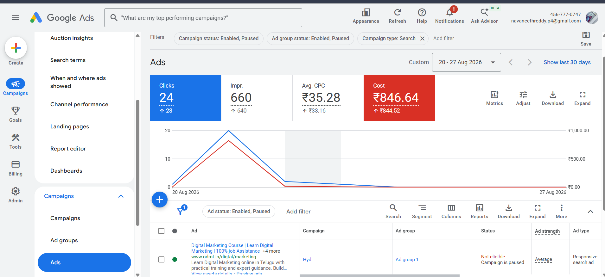

01
Hi, I’m P. Navaneeth Reddy
Digital marketing professional in training
DIGITAL MARKETING • PERFORMANCE MARKETING • SEO
Turning digitalmarketingknowledge intomeasurable growth.
I’m P. Navaneeth Reddy, focused on SEO, paid advertising, e-commerce, analytics and AI-assisted marketing through practical training and projects.
Let's connect →SEARCH PERFORMANCEGrowth in motion
● learningCTRConcept
KEYWORDSResearch
FUNNELOptimize
SEO audit + intent
AI workflow →
01 — ABOUT
Learning marketing by building, testing and analyzing.
Hi, I'm P. Navaneeth Reddy.
I am developing my career in Digital Marketing and Performance Marketing through practical training and projects. My learning journey includes SEO, Google Ads, Meta Ads, Social Media Marketing, WordPress, E-commerce, Content Marketing, Analytics and AI-powered marketing tools.
I’m particularly interested in understanding how businesses attract customers online, convert visitors into leads or customers, and use data to continuously improve their marketing.
My goal is to build a strong professional career while continuously improving my ability to create, analyze and optimize digital growth strategies.
WHAT I BRING
- Digital Marketing Training
- Practical Project Experience
- Paid Advertising Knowledge
- SEO & Website Optimization
- E-commerce Understanding
- WordPress Experience
- AI-Assisted Marketing Workflows
- Continuous Learning Mindset
02 — SKILLS
A growing marketing toolkit.
A practical set of skills I’m building through structured learning, experiments and project work.
02
Search Engine Optimization
03
Google Ads & PPC
04
Meta Ads & Social Media
05
E-commerce & Performance
06
AI-Powered Marketing
03 — PROJECTS
Practical work, grounded in learning.
FEATURED TRAINING PROJECT
Apollo Hospitals — Google Ads Campaign Structure
A practical Google Ads project created during digital marketing training, focused on planning a structured search advertising campaign based on audience intent, keywords and campaign organization.
View case study →CAMPAIGN ARCHITECTURE
Campaign→Ad Groups→Keywords→Ads→Intent
Match typesNegative keywordsAd assetsSearch intent
Business Website — WordPress Development
A responsive website project using WordPress, Astra and Elementor, with a focus on page structure, usability and SEO-friendly organization.
View website →Marketing & AI Workflow Experiments
Explorations of how AI can support research, content ideation, campaign planning, analysis and everyday marketing productivity.
View project →AI-ASSISTED MARKETING
Exploring what AI can add to marketing.
I’m learning how AI can support modern marketing workflows across research, content creation, campaign planning, analysis, automation and productivity.
Exploring 100+ AI tools and platforms across marketing workflows.
RESEARCH
↓IDEATION
↓CONTENT
↓CAMPAIGN
↓ANALYSIS
↓OPTIMIZATION
MARKETING ANALYTICS
Marketing decisions start with data.
I’m developing the ability to interpret marketing data, understand customer behavior, identify opportunities and improve digital experiences.
CTRclick-through rateCPCcost per clickCPAcost per actionROASreturn on ad spendOrganic Trafficvisibility signalConversion Ratejourney insight
TOOLS I’M LEARNING
Google Analytics
Google Search Console
Google Trends
Google Keyword Planner
04 — APPROACH
From research to optimization.
01
Research
Understand the business, audience, competitors, keywords and customer intent.
02
Strategy
Create a digital marketing strategy based on the business objective.
03
Build
Develop the website, landing page, content, advertising structure or assets.
04
Launch
Execute campaigns across relevant digital channels.
05
Analyze
Monitor important metrics and identify opportunities.
06
Optimize
Test, analyze and continuously improve campaigns and assets.
05 — TRAINING
Training & certifications.
Online Digital Marketing Training
Web Designing, WordPress, SEO, Social Media Marketing, Google Ads, Meta Ads, E-commerce, Performance Marketing, Content Marketing, Analytics and AI Marketing Tools.
View certificate →Google Skillshop
Training and certification focused on Google Search advertising fundamentals and campaign concepts.
View certificate →Google Ads Creative
Training focused on creative concepts and advertising assets.
View certificate →06 — CERTIFICATIONS
Google Ads credentials & campaign work.
A selection of Google Ads learning and campaign experience.


CAREER FOCUS
Where I want to grow next.
I’m currently looking to begin my professional journey in roles such as Digital Marketing Intern, Digital Marketing Executive, Performance Marketing Associate, SEO Executive, PPC / Google Ads Executive and E-commerce Marketing Executive.
“I’m particularly interested in opportunities where I can work on real campaigns, learn from experienced professionals and contribute to measurable business growth.”
WHY DIGITAL MARKETING
TechnologyCreativityPsychologyDataBusiness
Digital marketing combines the areas I enjoy most. I’m interested in understanding not just how to create content, but why people search, click, engage and purchase.
Performance Marketing • Google Ads • Meta Ads • SEO • E-commerce • AI Marketing • Analytics • Conversion Optimization
OPEN TO OPPORTUNITIES
LET’S CONNECT — 06Have a role, project, or idea? Let’s make it grow.
I’m ready to bring my digital marketing skills, curiosity, and growth mindset to a team or project that makes an impact.
Usually replies within one business day